UD6.8 Relationships
Tables related to one another
A blog post may have many comments or an order could be related to the user who placed it.
In Laravel, Eloquent relationships allow us to easily define and manage connections between database tables.
- Eloquent makes managing and working with these relationships easy, and supports a variety of common relationships:

So far, we haven’t used relationships because we’ve been focusing on basic CRUD operations within single tables, ensuring our application’s core logic works without introducing additional complexity.
Once we start using relationships, we’ll be able to:
- Retrieve related data with simple, readable syntax.
- Automatically load associated models to reduce queries (eager loading).
- Keep our database logic organized and consistent across the application.
- Easily handle complex queries involving multiple tables.
Documentation link
📄Official Documentation: Laravel Eloquent Relationships
Let´s learn it by coding examples of the three main of this relationships:
- One-to-one: Championships, User+championships tournaments
- One-to-many: User + Phones
- Many-to-many relationships. User - Roles

1-1 relationships
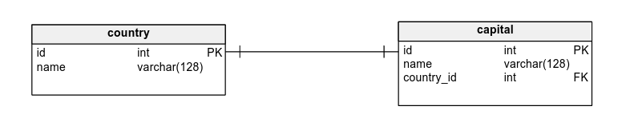
A one-to-one relationship in Laravel (and in databases generally) is used when each record in one table corresponds to exactly one record in another table .
When to use it:
- When extra data about a model needs to be stored separately for organizational or performance reasons.
- When that extra data will always belong to exactly one main record.
- To avoid having a single, overloaded table with too many optional columns.
Typical scenarios:
- User ↔ Profile : each user has exactly one profile with extra info (address, bio, etc.).
- Order ↔ Invoice : each order has one specific invoice.
- User ↔ Phone
- User ↔ Championship (example case): each user is tied to one warrior equipment record.
Benefits:
- Keeps data normalized and clean.
- Makes relationships explicit and easy to traverse with Eloquent (
$user->championship). - Reduces null clutter in a single large table.
If you want, I can also make you a quick comparison table of when to use 1:1, 1:N, and N:N relationships so it’s easier to choose later.

Full one-to-one example with a User model and a Championship model, where each user has exactly one warrior equipment record

Proyect
We must create tjhe proyect in Sesion8 folder
composer create-project laravel/laravel OneWarriors
1. Migration
You can create the migration and the Championship model at the same time in Laravel with this command:
php artisan make:model Championship -m
make:model Championship→ creates theChampionship.phpmodel inapp/Models/.-m→ also creates an empty migration for thechampionshipstable.
use Illuminate\Database\Migrations\Migration;
use Illuminate\Database\Schema\Blueprint;
use Illuminate\Support\Facades\Schema;
return new class extends Migration {
public function up()
{
Schema::create('championships', function (Blueprint $table) {
$table->id();
$table->foreignId('user_id')->constrained()->onDelete('cascade');
$table->string('warrior_equipment');
$table->timestamps();
// Additional fields can be added here if needed // Ensure one championship per user
// This assumes that a user can only have one championship
// If you want to allow multiple championships per user, remove this line
$table->unique('user_id');
});
}
public function down()
{
Schema::dropIfExists('championships');
}
};
Foreign key
Have a look into the foreign key created and how to use it

2. Models

User.php
namespace App\Models;
use Illuminate\Database\Eloquent\Factories\HasFactory;
use Illuminate\Database\Eloquent\Model;
class User extends Model
{
use HasFactory;
protected $fillable = ['name', 'email'];
public function championship()
{
return $this->hasOne(Championship::class);
}
}
Championship.php
namespace App\Models;
use Illuminate\Database\Eloquent\Factories\HasFactory;
use Illuminate\Database\Eloquent\Model;
class Championship extends Model
{
use HasFactory;
protected $fillable = ['user_id', 'warrior_equipment'];
public function user()
{
return $this->belongsTo(User::class);
}
}
Remember hasOne (NO foreign key) -> belongsTo (foreign key)

3. Seeder Example
DatabaseSeeder.php
use Illuminate\Database\Seeder;
use App\Models\User;
use App\Models\Championship;
class DatabaseSeeder extends Seeder
{
public function run()
{
// Create 3 users
$users = User::factory()->count(3)->create();
// Create one Championship for each User
foreach ($users as $index => $user) {
Championship::create([
'user_id' => $user->id,
'warrior_equipment' => ['Sword & Shield', 'Bow & Arrows', 'Axe & Armor'][$index]
]);
}
}
}
4. Example View (Blade)
resources/views/users.blade.php
<!DOCTYPE html>
<html>
<head>
<title>Users and Warrior Equipment</title>
</head>
<body>
<h1>Users and Their Warrior Equipment</h1>
<ul>
@foreach($users as $user)
<li>
<strong>{{ $user->name }}</strong> —
Equipment: {{ $user->championship->warrior_equipment ?? 'No equipment assigned' }}
</li>
@endforeach
</ul>
</body>
</html>
5. Controller Example to Pass Data
UserController.php
namespace App\Http\Controllers;
use App\Models\User;
class UserController extends Controller
{
public function index()
{
// Eager load Championship to reduce queries
$users = User::with('championship')->get();
return view('users', compact('users'));
}
}
6. Route to UserController
use App\Http\Controllers\UserController;
Route::get('/users', [UserController::class, 'index']);
Then, you can visit this URL in your browser to execute the index method:
http://localhost/users
This will load the users.blade.php view with the users data from the controller.
7. Seed the database
Running Migrations and seeder:
php artisan migrate --seed
Just seeding: php artisan db:seed
User table

Championship table with foreign key

After serving our proyect, we will get:
php artisan serve

If we ensure the 1-1 restriction:
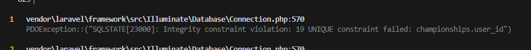
1-N relationships
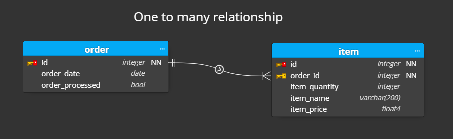
We’ll keep a clean 1-N (User hasMany Trophies) design and seed three players with their own trophies.
1) Create Project, Model & Migration
We must create the proyect in Sesion8 folder
composer create-project laravel/laravel 1nTrophies
Use -m to generate the migration together with the model.
php artisan make:model Trophy -m
Remember why make:model NAME -m
Saves time and keeps the model/migration in sync.
2) Migration (trophies table)
Edit database/migrations/xxxx_xx_xx_create_trophies_table.php:
use Illuminate\Database\Migrations\Migration;
use Illuminate\Database\Schema\Blueprint;
use Illuminate\Support\Facades\Schema;
return new class extends Migration {
public function up(): void
{
Schema::create('trophies', function (Blueprint $table) {
$table->id();
// FK to users; cascade so deleting a user removes their trophies
$table->foreignId('user_id')->constrained()->onDelete('cascade');
$table->string('title'); // trophy name
$table->string('description')->nullable(); // optional details
$table->timestamps();
});
}
public function down(): void
{
Schema::dropIfExists('trophies');
}
};
Run it:
php artisan migrate
Foreign key
The FK sets the 1-N link and keeps referential integrity.
3) Models (relations)
app/Models/User.php
User
User ->hasMany relation
namespace App\Models;
use Illuminate\Foundation\Auth\User as Authenticatable;
//This relation library is needed for the hasMany relation
use Illuminate\Database\Eloquent\Relations\HasMany;
class User extends Authenticatable
{
// ...
public function trophies(): HasMany
{
return $this->hasMany(Trophy::class);
}
}
app/Models/Trophy.php
Trophy model
Trophy ->BelongsTo relation
namespace App\Models;
use Illuminate\Database\Eloquent\Model;
use Illuminate\Database\Eloquent\Relations\BelongsTo;
class Trophy extends Model
{
protected $fillable = ['user_id', 'title', 'description'];
// ^ allows mass-assignment when using create/createMany
public function user(): BelongsTo
{
return $this->belongsTo(User::class);
}
}
Relationship methods hasMany & BelongsTo
These methods let Eloquent load and traverse the relationship cleanly.
4) Seeder
- 3 players with trophies
- Let´s create dedicated seeders
- It exists better way to do so with checking of existing users and trophies
- Customize your users and trophies
A) UsersSeeder (creates 3 users)
php artisan make:seeder UsersSeeder
database/seeders/UsersSeeder.php
<?php
namespace Database\Seeders;
use Illuminate\Database\Seeder;
use Illuminate\Support\Facades\Hash;
use Illuminate\Support\Facades\Schema;
use App\Models\User;
class UsersSeeder extends Seeder
{
public function run(): void
{
// Create exactly three users with predictable IDs (1..3)
User::create([
'name' => 'Aria Nightwind',
'email' => 'aria@example.com',
'password' => Hash::make('password'),
]);
User::create([
'name' => 'Borin Stonehelm',
'email' => 'borin@example.com',
'password' => Hash::make('password'),
]);
User::create([
'name' => 'Selene Riversong',
'email' => 'selene@example.com',
'password' => Hash::make('password'),
]);
}
}
B) TrophiesSeeder (adds trophies to those users)
php artisan make:seeder TrophiesSeeder
database/seeders/TrophiesSeeder.php
<?php
namespace Database\Seeders;
use Illuminate\Database\Seeder;
use Illuminate\Support\Facades\Schema;
use App\Models\Trophy;
class TrophiesSeeder extends Seeder
{
public function run(): void
{
// Straight insert, assuming user IDs 1..3 exist from UsersSeeder
Trophy::insert([
// Aria (user_id = 1)
['user_id' => 1, 'title' => 'Master Archer', 'description' => 'Top score in precision challenge', 'created_at' => now(), 'updated_at' => now()],
['user_id' => 1, 'title' => 'Shadow Runner', 'description' => 'Fastest stealth course time', 'created_at' => now(), 'updated_at' => now()],
['user_id' => 1, 'title' => 'Sky Watcher', 'description' => 'Completed aerial trials', 'created_at' => now(), 'updated_at' => now()],
// Borin (user_id = 2)
['user_id' => 2, 'title' => 'Dragon Slayer', 'description' => 'Defeated the cavern drake', 'created_at' => now(), 'updated_at' => now()],
['user_id' => 2, 'title' => 'Stone Guardian', 'description' => 'Held the line for 10 waves', 'created_at' => now(), 'updated_at' => now()],
['user_id' => 2, 'title' => 'Axe Maestro', 'description' => 'Perfect axe technique award', 'created_at' => now(), 'updated_at' => now()],
// Selene (user_id = 3)
['user_id' => 3, 'title' => 'River Champion', 'description' => 'Won the river regatta', 'created_at' => now(), 'updated_at' => now()],
['user_id' => 3, 'title' => 'Lore Keeper', 'description' => 'Solved all ancient riddles', 'created_at' => now(), 'updated_at' => now()],
['user_id' => 3, 'title' => 'Moonlit Victor', 'description' => 'Tournament champion at night', 'created_at' => now(), 'updated_at' => now()],
]);
}
}
Notes
- Using
insertis fast and simple; we set timestamps manually.
C) Register seeders order
database/seeders/DatabaseSeeder.php
public function run(): void
{
$this->call([
UsersSeeder::class, // must run first
TrophiesSeeder::class, // relies on user IDs 1..3
]);
}
D) Run the seeders
php artisan db:seed
You’ll end up with:
- 3 users (IDs 1–3)
- 9 trophies mapped directly via
user_id(1-N), with zero checks and clean truncation before insert.
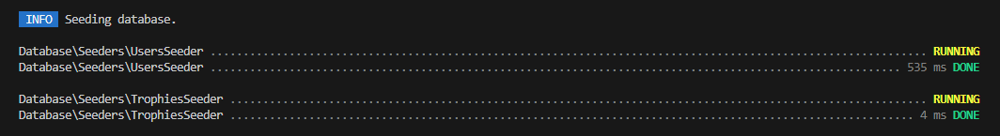

5) Controller
- pass user + trophies to the views
- index (all users)
- showTrophies (specific user)
php artisan make:controller UserController
app/Http/Controllers/UserController.php:
<?php
namespace App\Http\Controllers;
use App\Models\User;
class UserController extends Controller
{
// Show all users and their trophies
// Route: /users
public function index()
{
// Eager-load trophies to reduce queries
$users = \App\Models\User::with('trophies')->get();
return view('users.index', compact('users'));
}
// Show trophies for a specific user
// Route: /users/{id}/trophies
public function showTrophies($id)
{
// Eager-load trophies to reduce queries
$user = User::with('trophies')->findOrFail($id);
return view('users.trophies', compact('user'));
}
}
N+1 queries avoiding
eager loading (with) avoids N+1 queries when listing trophies.
6) Route
routes/web.php:
<?php
use Illuminate\Support\Facades\Route;
use App\Http\Controllers\UserController;
Route::get('/users', [UserController::class, 'index'])
->name('users.index');
Route::get('/users/{id}/trophies', [UserController::class, 'showTrophies'])
->name('users.trophies');
REST route standard
simple, REST-ish route for viewing user’s trophies.
7) Blade Views
Create 2 folders and 3 views:
- layouts
- app
- users
- index
- trophies

Layouts.app
CSS Pico based Blade view
<!doctype html>
<html lang="{{ str_replace('_', '-', app()->getLocale()) }}">
<head>
<meta charset="utf-8">
<meta name="viewport" content="width=device-width, initial-scale=1">
<meta name="csrf-token" content="{{ csrf_token() }}">
<title>@yield('title', 'Users & Trophies')</title>
{{-- Estilos web minimalistas (Pico.css) --}}
<link rel="stylesheet"
href="https://unpkg.com/@picocss/pico@latest/css/pico.min.css">
@stack('styles')
</head>
<body>
{{-- Barra superior simple --}}
<nav class="container-fluid">
<ul>
<li><strong><a href="{{ url('/') }}">🏆 Laravel Trophies</a></strong></li>
</ul>
<ul>
<li><a href="{{ url('/users') }}">Users</a></li>
</ul>
</nav>
<main class="container">
{{-- Mensajes flash y errores, sin clases personalizadas --}}
@if (session('status'))
<p><mark>{{ session('status') }}</mark></p>
@endif
@if ($errors->any())
<details open>
<summary>Errores</summary>
<ul>
@foreach ($errors->all() as $error)
<li>{{ $error }}</li>
@endforeach
</ul>
</details>
@endif
@yield('content')
</main>
<footer class="container">
<small>© {{ date('Y') }}</small>
</footer>
@stack('scripts')
</body>
</html>
INDEX all users
It can be improved with layouts.app ...
resources/views/users/index.blade.php
@extends('layouts.app')
@section('title', 'Users')
@section('content')
@if ($users->isEmpty())
<p>No users found.</p>
@else
<table>
<thead>
<tr>
<th>#</th>
<th>Name</th>
<th>Email</th>
<th>Trophies</th>
<th>Actions</th>
</tr>
</thead>
<tbody>
@foreach ($users as $user)
<tr>
<td>{{ $loop->iteration }}</td>
<td>{{ $user->name }}</td>
<td class="muted">{{ $user->email }}</td>
<td>{{ $user->trophies_count ?? ($user->relationLoaded('trophies') ? $user->trophies->count() : $user->trophies()->count()) }}</td>
<td>
<a href="{{ route('users.trophies', $user->id) }}">View trophies</a>
</td>
</tr>
@endforeach
</tbody>
</table>
@if (method_exists($users, 'links'))
<div style="margin-top:1rem;">
{{ $users->links() }}
</div>
@endif
@endif
@endsection

Trophies view
resources/views/users/trophies.blade.php:
@extends('layouts.app')
@section('title', 'Trophies for ' . $user->name)
@section('content')
<p><a href="{{ url('/users') }}">← Back to users</a></p>
@php
$trophies = $user->relationLoaded('trophies') ? $user->trophies : $user->trophies()->get();
@endphp
@if ($trophies->isEmpty())
<p class="muted">No trophies yet.</p>
@else
<table>
<thead>
<tr>
<th>#</th>
<th>Trophy ID</th>
<th>Title</th>
<th>Description</th>
<th>Created</th>
</tr>
</thead>
<tbody>
@foreach ($trophies as $trophy)
<tr>
<td>{{ $loop->iteration }}</td>
<td>{{ $trophy->id }}</td>
<td><strong>{{ $trophy->title }}</strong></td>
<td class="muted">{{ $trophy->description }}</td>
<td class="muted">{{ optional($trophy->created_at)->format('Y-m-d H:i') }}</td>
</tr>
@endforeach
</tbody>
</table>
@endif
@endsection
Straightforward rendering; shows empty state vs populated list.
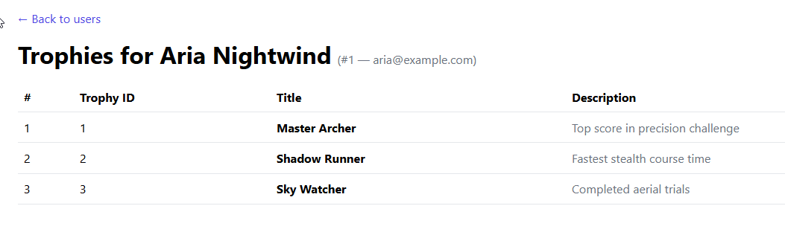
8) Quick test
- Visit:
/users/1/trophies,/users/2/trophies,/users/3/trophies(IDs of Aria, Borin, Selene). - You should see each player’s trophy list, confirming the User hasMany Trophies setup.
---
N-M relationships
So far, we´ve seen:
-
1-1 relationships
-
1-N relationships
- N-M relationships

Why a pivot table?

players and roles is a many-to-many relation: a player can have several roles, and a role can belong to many players.
Relationally, you can’t store multiple “role ids” in a single players row (that breaks normalization).
- Instead, you create a pivot table (
player_role) with two FKs (player_id,role_id) so each row represents one link . - This keeps data consistent, indexable, and easy to query (
$player->roles,$role->players).
Pivot table naming convention
https://laraveldaily.com/post/how-to-name-pivot-table-many-to-many-in-laravel

Wrong example
Wrong names would belocation_users (because it's not singular) or user_location (because "user" and "location" is not in alphabetical order).
1) Create proyect, models, migrations, controller & view
Within sesion 8 folder:
composer create-project laravel/laravel NMRolesphp
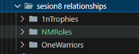
php artisan make:model Player -m
php artisan make:model Role -m
php artisan make:migration create_player_role_table --create=player_role
php artisan make:controller PlayerController
php artisan make:view players/index
2) Migrations
database/migrations/xxxx_xx_xx_create_players_table.php
public function up(): void
{
Schema::create('players', function (Blueprint $table) {
$table->id();
$table->string('name');
$table->unsignedInteger('level')->default(1);
$table->timestamps();
});
}
database/migrations/xxxx_xx_xx_create_roles_table.php
public function up(): void
{
Schema::create('roles', function (Blueprint $table) {
$table->id();
$table->string('name')->unique();
$table->string('description')->nullable();
$table->timestamps();
});
}
database/migrations/xxxx_xx_xx_create_player_role_table.php
public function up(): void
{
Schema::create('player_role', function (Blueprint $table) {
$table->id();
$table->foreignId('player_id')->constrained()->cascadeOnDelete();
$table->foreignId('role_id')->constrained()->cascadeOnDelete();
$table->timestamps();
// Prevent duplicate links:
$table->unique(['player_id', 'role_id']);
});
}
3) Eloquent relationships
here, both of them are belongsToMany type:

app/Models/Player.php
namespace App\Models;
use Illuminate\Database\Eloquent\Factories\HasFactory;
use Illuminate\Database\Eloquent\Model;
class Player extends Model
{
use HasFactory;
protected $fillable = ['name', 'level'];
public function roles()
{
return $this->belongsToMany(Role::class)->withTimestamps();
}
}
app/Models/Role.php
namespace App\Models;
use Illuminate\Database\Eloquent\Factories\HasFactory;
use Illuminate\Database\Eloquent\Model;
class Role extends Model
{
use HasFactory;
protected $fillable = ['name', 'description'];
public function players()
{
return $this->belongsToMany(Player::class)->withTimestamps();
}
}
4) Factories (for seeding)
php artisan make:factory PlayerFactory --model=Player
php artisan make:factory RoleFactory --model=Role
database/factories/PlayerFactory.php
namespace Database\Factories;
use Illuminate\Database\Eloquent\Factories\Factory;
class PlayerFactory extends Factory
{
public function definition(): array
{
return [
'name' => $this->faker->unique()->firstName(),
'level' => $this->faker->numberBetween(1, 20),
];
}
}
database/factories/RoleFactory.php
namespace Database\Factories;
use Illuminate\Database\Eloquent\Factories\Factory;
use Illuminate\Database\Eloquent\Factories\Sequence;
class RoleFactory extends Factory
{
public function definition(): array
{
return [
'name' => $this->faker->unique()->jobTitle(), // fallback if not using sequence
'description' => $this->faker->sentence(3),
];
}
/**
* Helper to generate 8 canonical RPG roles with descriptions.
*/
public function canonical(): static
{
$items = [
['name' => 'Warrior', 'description' => 'Frontline fighter'],
['name' => 'Mage', 'description' => 'Caster of spells'],
['name' => 'Rogue', 'description' => 'Stealthy assassin'],
['name' => 'Priest', 'description' => 'Healer and support'],
['name' => 'Paladin', 'description' => 'Holy knight'],
['name' => 'Druid', 'description' => 'Nature guardian'],
['name' => 'Hunter', 'description' => 'Ranged fighter with pets'],
['name' => 'Warlock', 'description' => 'Dark magic user'],
];
return $this->state(new Sequence(...$items));
}
}
5) Seeder / Factories
database/seeders/DatabaseSeeder.php
namespace Database\Seeders;
use Illuminate\Database\Seeder;
use App\Models\Player;
use App\Models\Role;
class DatabaseSeeder extends Seeder
{
public function run(): void
{
// Create the 8 canonical roles
Role::factory()->canonical()->count(8)->create();
// Create 5 players
$players = Player::factory()->count(5)->create();
// Attach 2–4 random roles to each player
//pluck('id') retrieves all role IDs
$roleIds = Role::pluck('id');
foreach ($players as $player) {
// syncWithoutDetaching allows adding roles without removing existing ones
$player->roles()->syncWithoutDetaching(
$roleIds->random(rand(2, 4))->values()->all()
);
}
}
}
Run everything:
php artisan migrate:fresh --seed
6) Controller + route to list players with roles
app/Http/Controllers/PlayerController.php
namespace App\Http\Controllers;
use App\Models\Player;
class PlayerController extends Controller
{
public function index()
{
// Eager-load roles to avoid N+1 queries
$players = Player::with('roles')->orderBy('name')->get();
return view('players.index', compact('players'));
}
}
routes/web.php
use App\Http\Controllers\PlayerController;
Route::get('/players', [PlayerController::class, 'index'])->name('players.index');
7) Blade view:
resources/views/players/index.blade.php
Pico keeps markup tiny; just include the CDN and use semantic elements.
<!DOCTYPE html>
<html lang="en">
<head>
<meta charset="utf-8">
<title>Players & Roles</title>
<meta name="viewport" content="width=device-width, initial-scale=1">
{{-- Pico CSS CDN --}}
<link rel="stylesheet" href="https://cdn.jsdelivr.net/npm/@picocss/pico@2/css/pico.min.css">
</head>
<body>
<main class="container">
<header>
<h1>Players & Roles</h1>
<p>Many-to-many demo powered by a pivot table.</p>
</header>
<article>
<table role="grid">
<thead>
<tr>
<th>#</th>
<th>Player</th>
<th>Level</th>
<th>Roles</th>
</tr>
</thead>
<tbody>
@foreach ($players as $i => $player)
<tr>
<td>{{ $i + 1 }}</td>
<td>{{ $player->name }}</td>
<td>{{ $player->level }}</td>
<td>
@if($player->roles->isEmpty())
<em>No roles</em>
@else
{{-- Comma-separated role names --}}
{{ $player->roles->pluck('name')->join(', ') }}
@endif
</td>
</tr>
@endforeach
</tbody>
</table>
</article>
</main>
</body>
</html>
8) Migrate & Seed OR Quick test
MIgrate and seed
php artisan migrate --seed
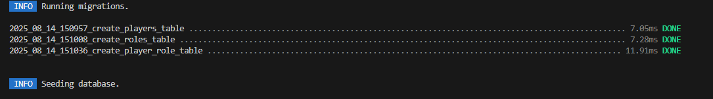
php artisan serve
- Database will have:
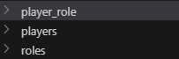 * Player_role

- players
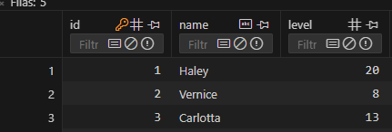
- roles

- The view will show:
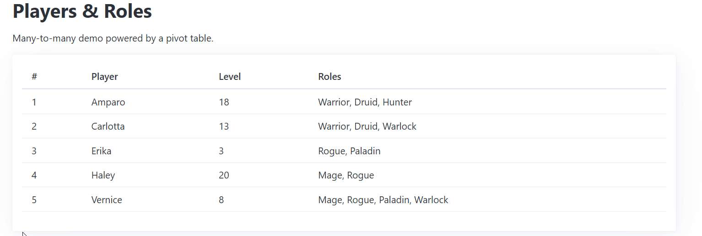
Quick Test:
php artisan tinker
>>> App\Models\Player::with('roles')->first()->toArray();
Now, we have:
- Proper pivot (
player_role) with a unique composite index, - Factories generating 5 players & 8 canonical roles,
- Seeder wiring many-to-many links,
- A Pico CSS view to see everything at
/players.
Customize
Now, as usual,customize your NM application and upload toGithub and Moodle
Database Relationship Comparison
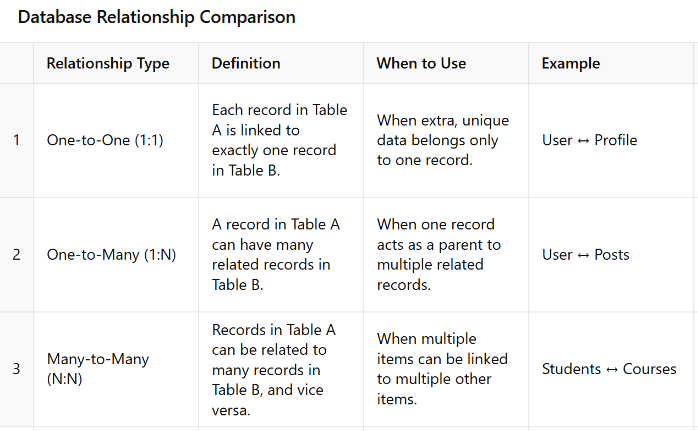
Activity

30 min Activity